no-ip service Journey
History
-
I am trying to reach my onpremise environment.
-
I registered for the no-ip service
-
Installed the nuc update application.
-
Started Conversation with Support
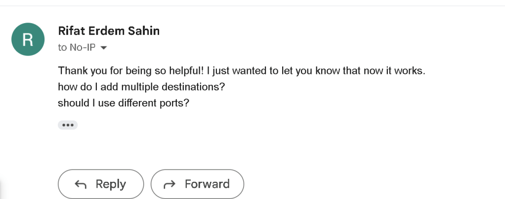
Use CASES
-
NAS( synology alternative) > I can access using its build in system
-
Wake on LAN / WAN ? > need to sort it ouy
-
Minecraft Server
-
OpenVPN Server
-
POE cameras ( Kasa alternative )
Reference
https://www.noip.com/support/knowledgebase/free-dynamic-dns-getting-started-guide-ip-version
2 machines in the studio has the nuc agent
1.Windows > straight forward install
2.Linux over Proxmox ( here is the install )
https://www.noip.com/support/knowledgebase/installing-the-linux-dynamic-update-client
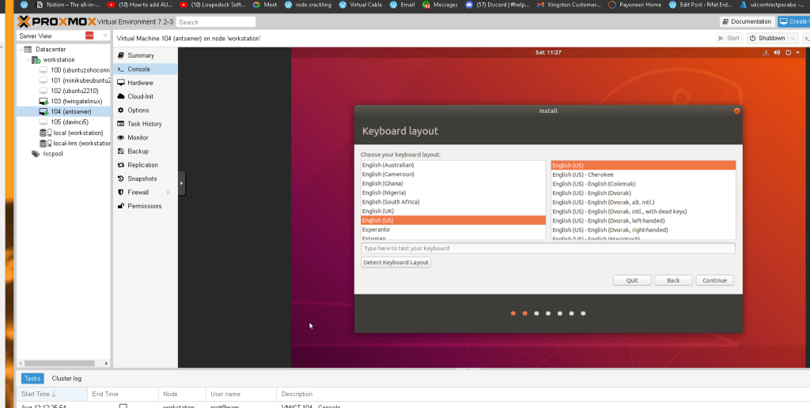
have the system make ready
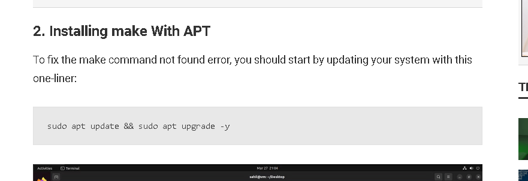
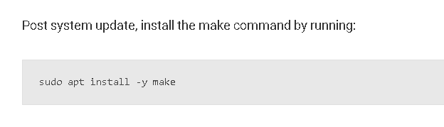
https://www.makeuseof.com/how-to-fix-make-command-not-found-error-ubuntu/
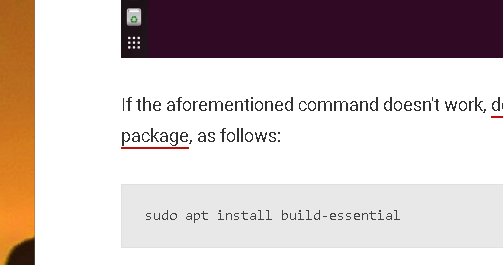
not so straight forward to install on linux
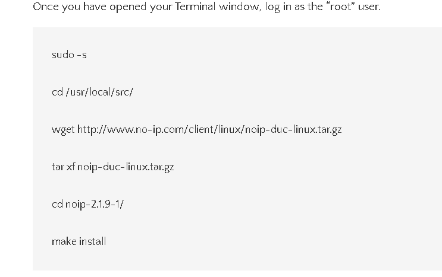
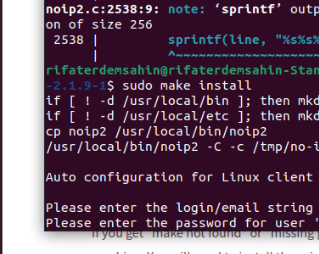
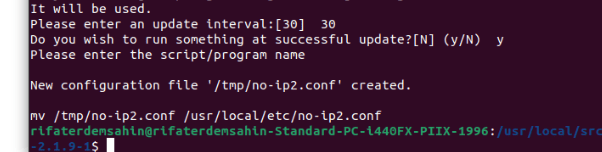
REferences
https://www.google.com/search?q=Dynamic+DNS+Update+Client+linux+noip&rlz=1C1GCEA_enGB1067GB1067&oq=Dynamic+DNS+Update+Client+linux+noip&aqs=chrome..69i57j33i160.4814j0j4&sourceid=chrome&ie=UTF-8
https://www.makeuseof.com/how-to-fix-make-command-not-found-error-ubuntu/
https://www.noip.com/support/knowledgebase/how-to-configure-ddns-in-router
Semblance in the studio it works
When i am out it fails
Mitigation test on mobile before you leave the workstation
Ip location is correct
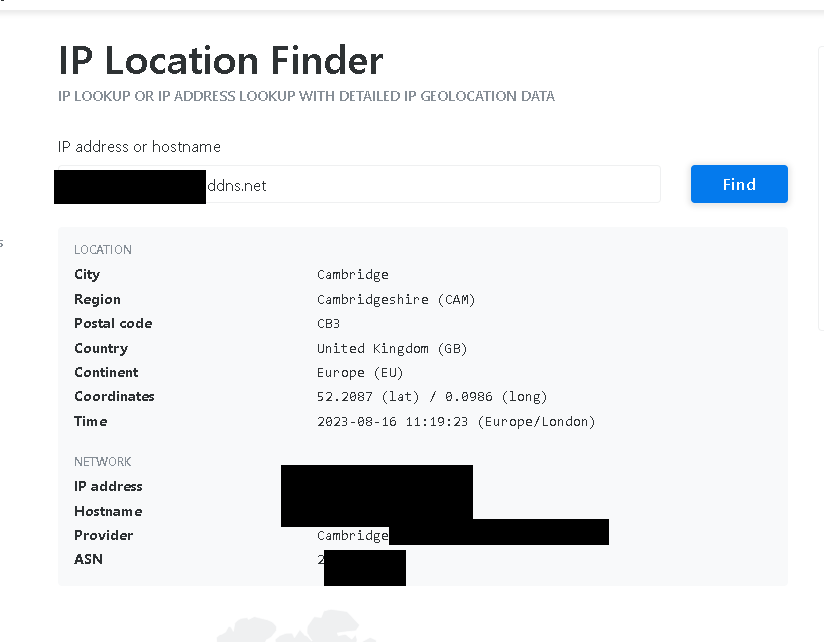
https://tools.keycdn.com/geo
I am stuck at accesing from outside
Left is cloud right is my on prem
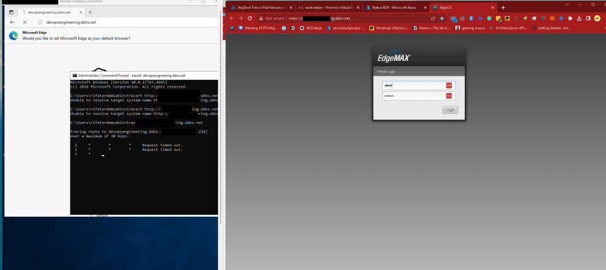
Opened another ticket
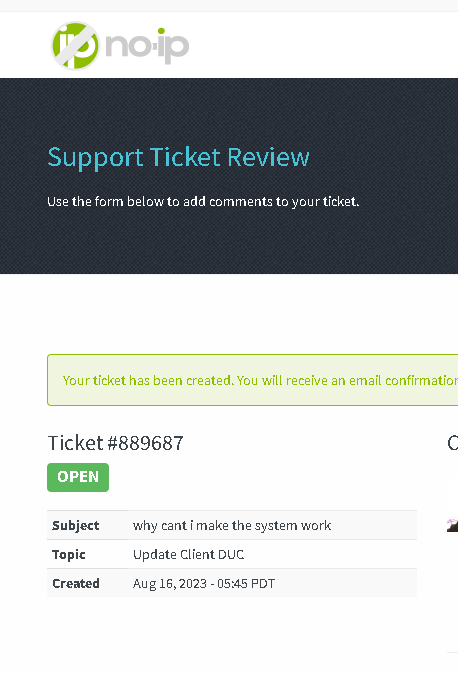
https://www.noip.com/ticket/view?tid=E5E5ttYE3pQm6212
On Azure I get this on Edge
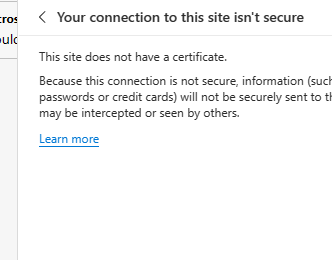
Installing chrome there
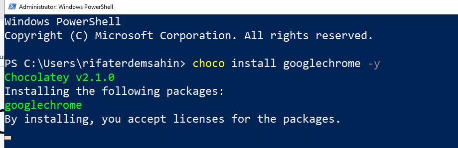
Still the same error
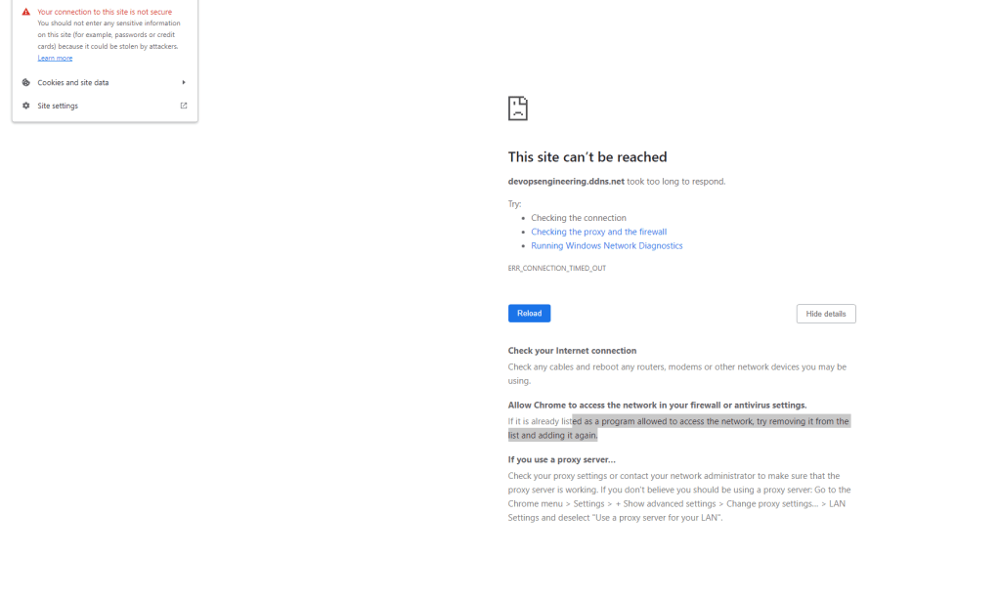
My bad the forwared port was failing
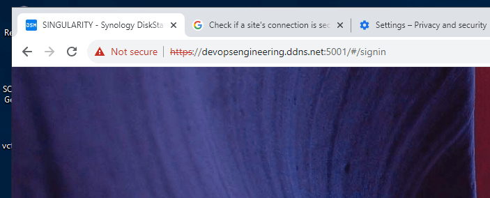
Go to router
https://192.168.3.1/#Services/DHCP/Server
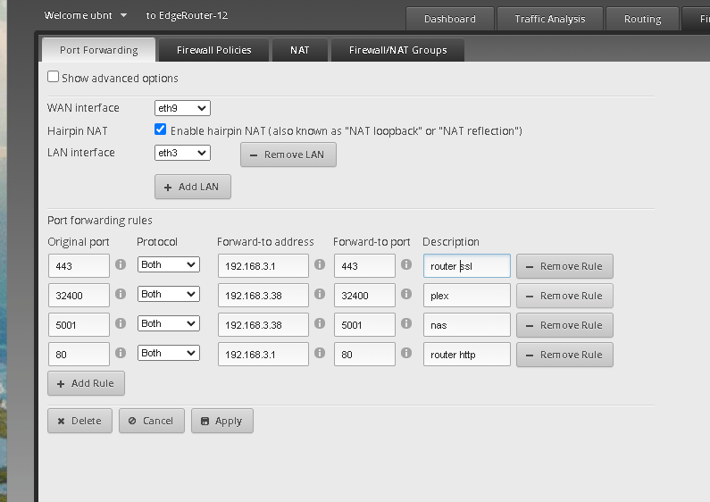
Plex also turns on
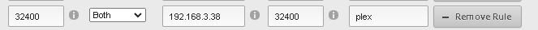
Still th port 80 and por 443 is not working outside of the premise
As a back up i would also set it on the router
https://www.noip.com/support/knowledgebase/how-to-setup-ddns-ubiquiti-edge-router
Applied over here
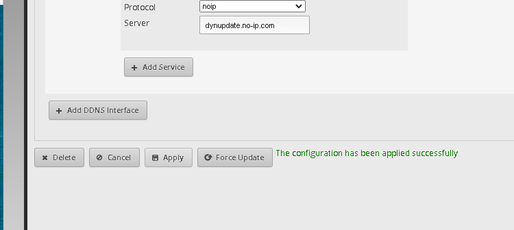
https://192.168.3.1/#Services/DNS
The error is the et3 should be the siwtch 0
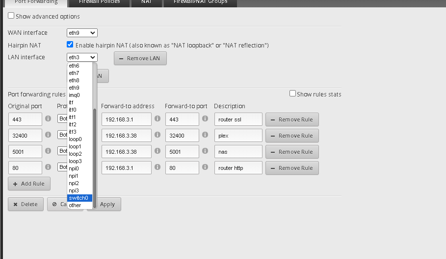
3.1 network gets mapped
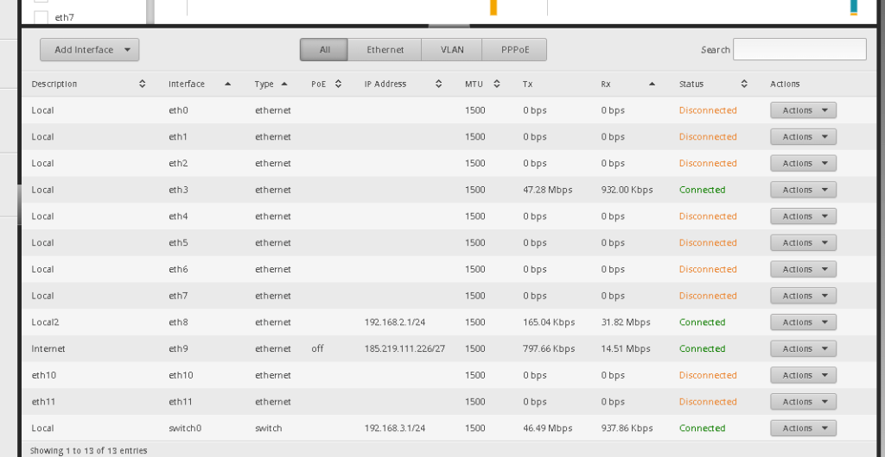
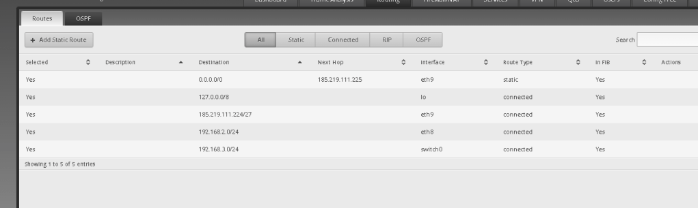
dd now the proxmox as well
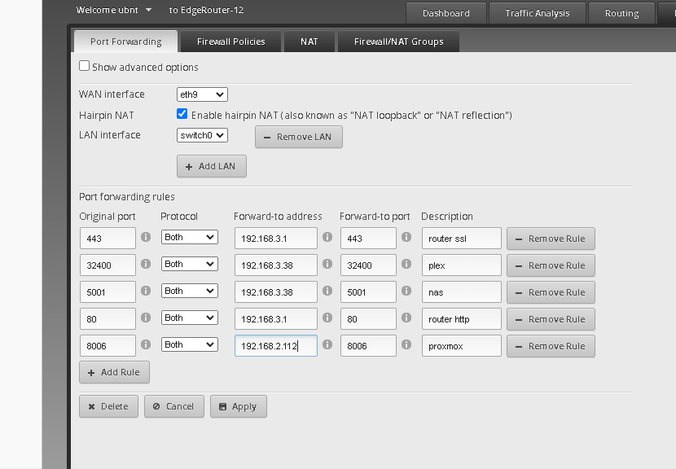
happiness
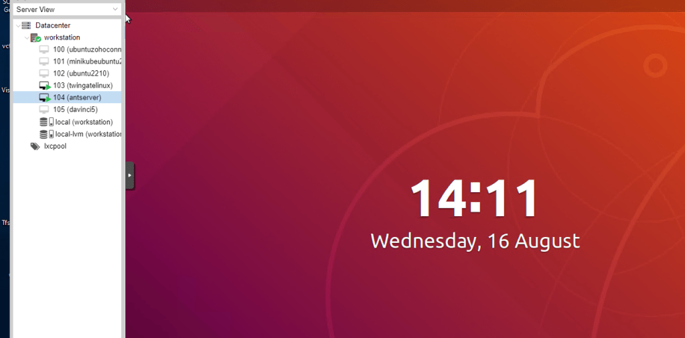
Mobile works
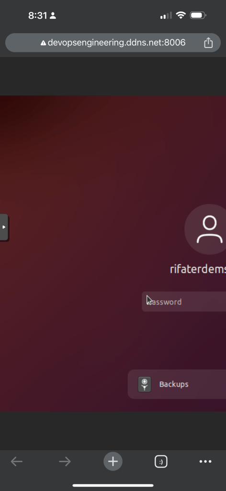
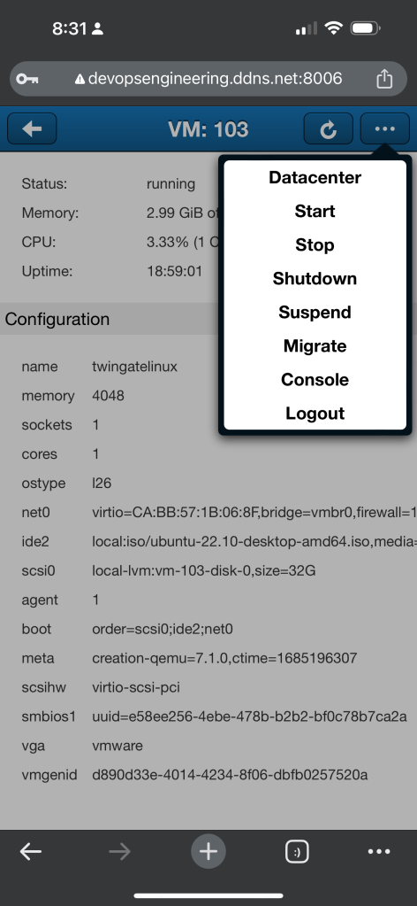
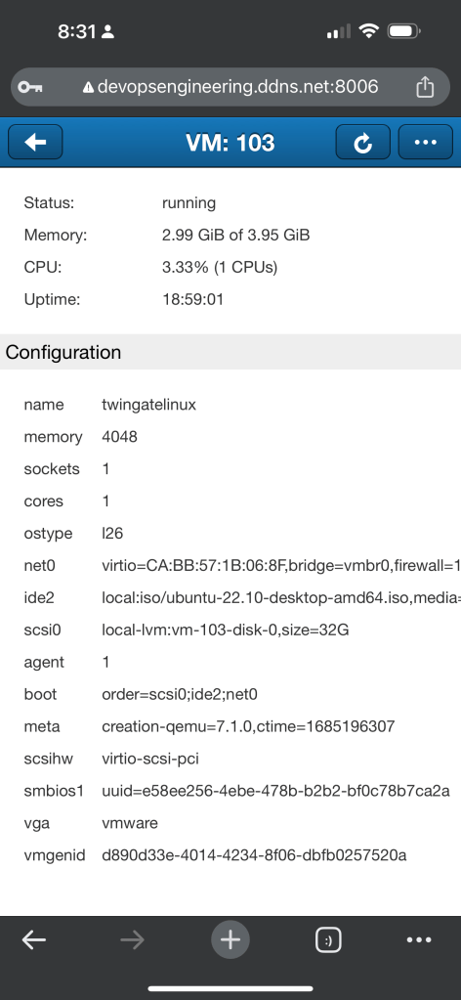
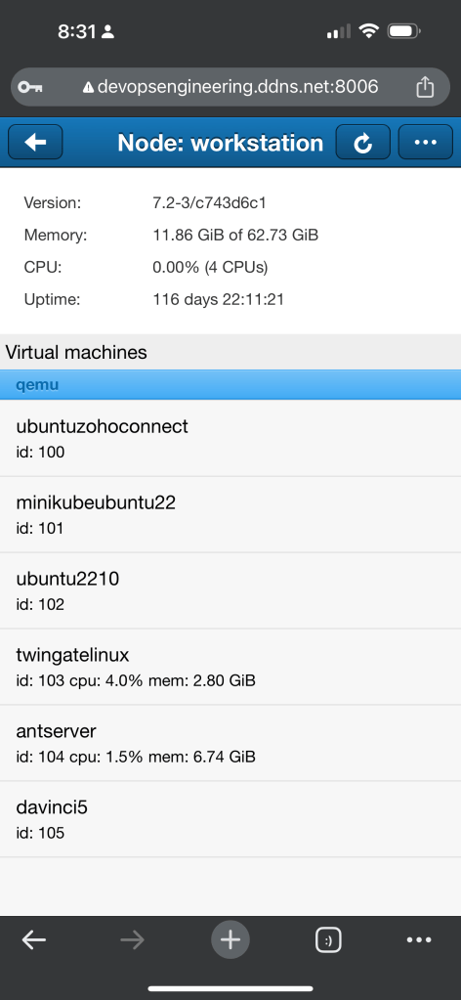
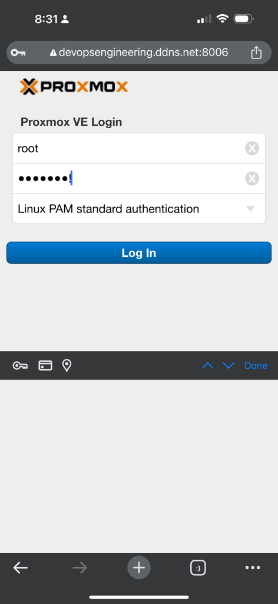
Imported from rifaterdemsahin.com · 2023